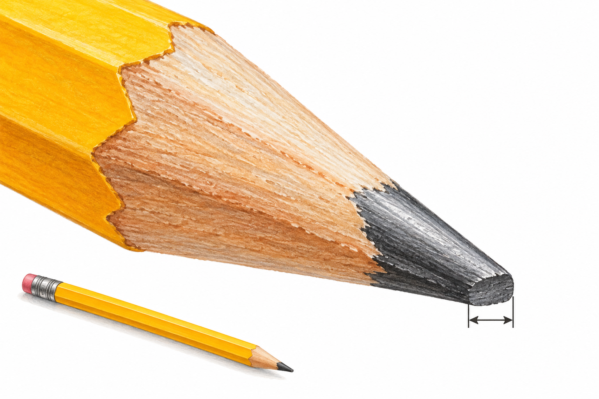

<!doctype html><html lang="ja"><head><meta charset="utf-8"><meta name="viewport" content="width=device-width,initial-scale=1"><title>たんいをえらぼう</title>
<style>img.ex-figure,img.ref-figure{object-fit:contain}</style>
<style>
*{box-sizing:border-box}body{margin:0;background:#f4f7fb;color:#222;font-family:"Hiragino Sans","Noto Sans JP",sans-serif}#app{max-width:920px;margin:auto;padding:14px}.top{display:flex;justify-content:space-between;align-items:center;gap:10px}.card{background:#fff;border:2px solid #d9e3ee;border-radius:20px;padding:18px;margin:12px 0;box-shadow:0 5px 18px #15314b14}.menu h1{font-size:30px;margin:0 0 8px}.qpic{width:min(100%,520px);height:300px;object-fit:contain;border-radius:16px;background:white}.q{font-size:25px;font-weight:700;line-height:1.6}.n{color:#185FA5;font-size:34px}.blank{display:inline-block;min-width:110px;border-bottom:4px solid #185FA5;color:#185FA5}.choices{display:flex;justify-content:center;gap:12px;flex-wrap:wrap}.u{min-width:120px;font-size:26px;font-weight:800;padding:14px 22px;border:3px solid #b9c6d4;border-radius:16px;background:white;cursor:pointer}.u:hover{border-color:#185FA5;transform:translateY(-1px)}.u.ok{background:#EAF3DE;border-color:#3B6D11}.u.ng{background:#FCEBEB;border-color:#A32D2D}.fb{text-align:center;font-size:22px}.g{color:#3B6D11;font-weight:800}.r{color:#A32D2D;font-weight:800}.btn{font:inherit;font-size:18px;font-weight:700;cursor:pointer;border:2px solid #9db4ca;border-radius:14px;background:white;padding:11px 18px;margin:5px}.primary{background:#185FA5;color:white;border-color:#185FA5}.expic{width:100%;max-width:820px;border-radius:18px;border:2px solid #d9e3ee}.small{font-size:15px;color:#596b7c}.result{font-size:22px;text-align:center}.categoryBtns{display:grid;grid-template-columns:repeat(2,minmax(0,1fr));gap:10px;margin-top:16px}.categoryBtns .btn{font-size:20px;padding:18px 10px}@media(max-width:600px){#app{padding:8px}.qpic{height:220px}.q{font-size:21px}.u{min-width:92px;font-size:22px}.categoryBtns{grid-template-columns:1fr}.expic{border-radius:10px}}
.qpic{display:block;margin:0 auto 16px;overflow:hidden}.quantity-pictures{display:grid;grid-template-columns:1fr 1fr;gap:20px;align-items:center}.ex-figure,.ref-figure{width:100%;height:280px;display:block}.explanation{text-align:center}.quantity-answer{font-size:32px;font-weight:800;color:#185FA5}@media(max-width:600px){.quantity-pictures{grid-template-columns:1fr}.ex-figure,.ref-figure{height:240px}} .sound-controls{max-width:920px;margin:0 auto;display:flex;justify-content:flex-end;padding:8px 14px 0}.unit-note{padding:24px;border-radius:16px;background:#edf5ff;font-size:22px;line-height:1.7}.quantity-answer{margin:20px 0}.explanation>p:last-child{line-height:1.8;font-size:19px}.top{flex-wrap:wrap} </style></head><body><div id="soundControls"></div><div id="app"></div><script>
const Q=[{"cat":"L","key":"pencil","label":"えんぴつのながさ","n":14,"unit":"cm","img":"img/questions/pencil.webp","eximg":"img/explanations/pencil.webp"},{"cat":"L","key":"eraser","label":"けしゴムのながさ","n":5,"unit":"cm","img":"img/questions/eraser.webp","eximg":"img/explanations/eraser.webp"},{"cat":"L","key":"coin","label":"1円玉のよこはば","n":2,"unit":"cm","img":"img/questions/coin.webp","eximg":"img/explanations/coin.webp"},{"cat":"L","key":"notebook","label":"ノートのよこのながさ","n":18,"unit":"cm","img":"img/questions/notebook.webp","eximg":"img/explanations/notebook.webp"},{"cat":"L","key":"ant","label":"アリのからだのながさ","n":5,"unit":"mm","img":"img/questions/ant.webp","eximg":"img/explanations/ant.webp"},{"cat":"L","key":"blackboard","label":"こくばんのよこのながさ","n":4,"unit":"m","img":"img/questions/blackboard.webp","eximg":"img/explanations/blackboard.webp"},{"cat":"L","key":"pool","label":"プールのながさ","n":25,"unit":"m","img":"img/questions/pool.webp","eximg":"img/explanations/pool.webp"},{"cat":"L","key":"door","label":"ドアのたかさ","n":2,"unit":"m","img":"img/questions/door.webp","eximg":"img/explanations/door.webp"},{"cat":"L","key":"tulip","label":"チューリップのたかさ","n":30,"unit":"cm","img":"img/questions/tulip.webp","eximg":"img/explanations/tulip.webp"},{"cat":"L","key":"hand","label":"2年生のてのひらのよこはば","n":6,"unit":"cm","img":"img/questions/hand.webp","eximg":"img/explanations/hand.webp"},{"cat":"L","key":"ruler","label":"ものさしのながさ","n":30,"unit":"cm","img":"img/questions/ruler.webp","eximg":"img/explanations/ruler.webp"},{"cat":"L","key":"randoseru","label":"ランドセルのたかさ","n":30,"unit":"cm","img":"img/questions/randoseru.webp","eximg":"img/explanations/randoseru.webp"},{"cat":"L","key":"child","label":"2年生のせのたかさ","n":120,"unit":"cm","img":"img/questions/child.webp","eximg":"img/explanations/child.webp"},{"cat":"L","key":"giraffe","label":"キリンのたかさ","n":5,"unit":"m","img":"img/questions/giraffe.webp","eximg":"img/explanations/giraffe.webp"},{"cat":"L","key":"bus","label":"バスのながさ","n":10,"unit":"m","img":"img/questions/bus.webp","eximg":"img/explanations/bus.webp"},{"cat":"L","key":"ricegrain","label":"ごはん1つぶのながさ","n":7,"unit":"mm","img":"img/questions/ricegrain.webp","eximg":"img/explanations/ricegrain.webp"},{"cat":"L","key":"banana","label":"バナナのながさ","n":18,"unit":"cm","img":"img/questions/banana.webp","eximg":"img/explanations/banana.webp"},{"cat":"L","key":"scissors","label":"はさみのながさ","n":16,"unit":"cm","img":"img/questions/scissors.webp","eximg":"img/explanations/scissors.webp"},{"cat":"V","key":"spoon","label":"小さじ1ぱいのみず","n":5,"unit":"mL","img":"img/questions/spoon.webp","eximg":"img/explanations/spoon.webp"},{"cat":"V","key":"eyedrops","label":"目薬1本のえき","n":5,"unit":"mL","img":"img/questions/eyedrops.webp","eximg":"img/explanations/eyedrops.webp"},{"cat":"V","key":"yogurt","label":"小さい乳酸菌飲料1本","n":65,"unit":"mL","img":"img/questions/yogurt.webp","eximg":"img/explanations/yogurt.webp"},{"cat":"V","key":"juice","label":"小さいジュースのパック","n":200,"unit":"mL","img":"img/questions/juice.webp","eximg":"img/explanations/juice.webp"},{"cat":"V","key":"cup","label":"コップ1ぱいのみず","n":2,"unit":"dL","img":"img/questions/cup.webp","eximg":"img/explanations/cup.webp"},{"cat":"V","key":"bottle","label":"水とうのおちゃ","n":6,"unit":"dL","img":"img/questions/bottle.webp","eximg":"img/explanations/bottle.webp"},{"cat":"V","key":"pet","label":"ペットボトルのおちゃ","n":500,"unit":"mL","img":"img/questions/pet.webp","eximg":"img/explanations/pet.webp"},{"cat":"V","key":"shampoo","label":"シャンプーのボトル","n":5,"unit":"dL","img":"img/questions/shampoo.webp","eximg":"img/explanations/shampoo.webp"},{"cat":"V","key":"kettle","label":"やかんのみず","n":2,"unit":"L","img":"img/questions/kettle.webp","eximg":"img/explanations/kettle.webp"},{"cat":"V","key":"bucket","label":"バケツのみず","n":8,"unit":"L","img":"img/questions/bucket.webp","eximg":"img/explanations/bucket.webp"},{"cat":"V","key":"bath","label":"おふろのみず","n":200,"unit":"L","img":"img/questions/bath.webp","eximg":"img/explanations/bath.webp"},{"cat":"W","key":"clip","label":"クリップ1このおもさ","n":1,"unit":"g","img":"img/questions/clip.webp","eximg":"img/explanations/clip.webp"},{"cat":"W","key":"coin_w","label":"1円玉1まいのおもさ","n":1,"unit":"g","img":"img/questions/coin_w.webp","eximg":"img/explanations/coin_w.webp"},{"cat":"W","key":"candy","label":"あめ1このおもさ","n":4,"unit":"g","img":"img/questions/candy.webp","eximg":"img/explanations/candy.webp"},{"cat":"W","key":"pencil2","label":"えんぴつ1本のおもさ","n":5,"unit":"g","img":"img/questions/pencil2.webp","eximg":"img/explanations/pencil2.webp"},{"cat":"W","key":"egg","label":"たまご1このおもさ","n":60,"unit":"g","img":"img/questions/egg.webp","eximg":"img/explanations/egg.webp"},{"cat":"W","key":"apple","label":"りんご1このおもさ","n":300,"unit":"g","img":"img/questions/apple.webp","eximg":"img/explanations/apple.webp"},{"cat":"W","key":"smartphone","label":"スマートフォンのおもさ","n":170,"unit":"g","img":"img/questions/smartphone.webp","eximg":"img/explanations/smartphone.webp"},{"cat":"W","key":"textbook","label":"教科書1さつのおもさ","n":400,"unit":"g","img":"img/questions/textbook.webp","eximg":"img/explanations/textbook.webp"},{"cat":"W","key":"randoseru2","label":"にもつ入りランドセルのおもさ","n":3,"unit":"kg","img":"img/questions/randoseru2.webp","eximg":"img/explanations/randoseru2.webp"},{"cat":"W","key":"ricebag","label":"おこめのふくろのおもさ","n":5,"unit":"kg","img":"img/questions/ricebag.webp","eximg":"img/explanations/ricebag.webp"},{"cat":"W","key":"cat","label":"ネコのおもさ","n":4,"unit":"kg","img":"img/questions/cat.webp","eximg":"img/explanations/cat.webp"},{"cat":"W","key":"child2","label":"2年生のたいじゅう","n":25,"unit":"kg","img":"img/questions/child2.webp","eximg":"img/explanations/child2.webp"},{"cat":"K","key":"schoolyard","label":"校庭1しゅうのながさ","n":200,"unit":"m","img":"img/questions/schoolyard.webp","eximg":"img/explanations/schoolyard.webp"},{"cat":"K","key":"schoolpark","label":"学校から近くの公園まで","n":500,"unit":"m","img":"img/questions/schoolpark.webp","eximg":"img/explanations/schoolpark.webp"},{"cat":"K","key":"homestation","label":"家から駅までのきょり","n":1,"unit":"km","img":"img/questions/homestation.webp","eximg":"img/explanations/homestation.webp"},{"cat":"K","key":"walk15","label":"あるいて15分くらいのきょり","n":1,"unit":"km","img":"img/questions/walk15.webp","eximg":"img/explanations/walk15.webp"},{"cat":"K","key":"walk30","label":"あるいて30分くらいのみちのり","n":2,"unit":"km","img":"img/questions/walk30.webp","eximg":"img/explanations/walk30.webp"},{"cat":"K","key":"hike","label":"えんそくコースのきょり","n":3,"unit":"km","img":"img/questions/hike.webp","eximg":"img/explanations/hike.webp"},{"cat":"K","key":"towntown","label":"町からとなりの町まで","n":5,"unit":"km","img":"img/questions/towntown.webp","eximg":"img/explanations/towntown.webp"},{"cat":"K","key":"run10","label":"長いランニングコースのきょり","n":10,"unit":"km","img":"img/questions/run10.webp","eximg":"img/explanations/run10.webp","illustration":"running","note":"長いコースは、kmを使うと表しやすくなります。10kmは10000mです。"},{"cat":"K","key":"tokyoosaka","label":"東京から大阪までのきょり","n":500,"unit":"km","img":"img/questions/tokyoosaka.webp","eximg":"img/explanations/tokyoosaka.webp"},{"cat":"K","key":"fuji_d","label":"富士山のたかさ","n":3776,"unit":"m","img":"img/questions/fuji_d.webp","eximg":"img/explanations/fuji_d.webp"},{"cat":"T","key":"brush","label":"歯みがきをする時間","n":3,"unit":"分","note":"短い時間は「分」で表します。3分は、1分が3つぶんです。","scene":"img/generated/brush-v2.png"},{"cat":"T","key":"lunch_time","label":"給食を食べる時間","n":20,"unit":"分","note":"給食を食べる時間は、20分くらいがめやすです。","scene":"img/generated/lunch_time-v2.png"},{"cat":"T","key":"lunch_prepare","label":"給食の準備にかかる時間","n":10,"unit":"分","note":"10分は、1時間より短い時間です。","scene":"img/generated/lunch_prepare-v2.png"},{"cat":"T","key":"school_time","label":"朝から帰るまで学校で過ごす時間","n":6,"unit":"時間","note":"朝、学校に来てから、授業や給食、休み時間を過ごし、帰るまでの時間です。6時間は360分。学校や学年によって時間は変わります。","scene":"img/generated/school_time-v2.png"},{"cat":"T","key":"lesson_time","label":"学校の授業1回の時間","n":45,"unit":"分","note":"小学校の授業1回は、45分がめやすです。1時間は60分です。","scene":"img/generated/lesson_time-v2.png"},{"cat":"T","key":"recess_time","label":"学校の休み時間","n":10,"unit":"分","note":"短い休み時間は「分」で表します。学校によって時間は変わります。","scene":"img/generated/recess_time-v2.png"},{"cat":"W","key":"elephant","label":"大人のゾウ1頭のおもさ","n":5,"unit":"t","illustration":"heavy","panel":0,"note":"とても重いものには「t（トン）」を使います。1tは1000kg。5tは5000kgです。ゾウのおもさは種類や大きさで変わります。"},{"cat":"W","key":"truck","label":"小型トラック1台の車体のおもさ","n":3,"unit":"t","illustration":"heavy","panel":1,"note":"トラックのような重いものは、t（トン）で表せます。3tは3000kg。車体のおもさは車の種類で変わります。"},{"cat":"W","key":"whale","label":"大きなザトウクジラ1頭のおもさ","n":30,"unit":"t","illustration":"heavy","panel":2,"note":"大きなクジラは、何十tものおもさがあります。30tは30000kgです。おもさは種類や大きさで変わります。"},{"cat":"A","key":"stamp_area","label":"切手1まいの面積","n":6,"unit":"cm²","illustration":"area","panel":0,"note":"小さな面積にはcm²。たとえば、たて3cm・よこ2cmなら、3×2＝6cm²です。"},{"cat":"A","key":"classroom_area","label":"教室のゆかの面積","n":60,"unit":"m²","illustration":"area","panel":1,"note":"部屋のゆかの面積にはm²。たとえば、たて6m・よこ10mなら60m²です。"},{"cat":"A","key":"schoolyard_area","label":"広い校庭の面積","n":5000,"unit":"m²","illustration":"area","panel":2,"note":"校庭の面積にはm²。5000m²は、たて50m・よこ100mの長方形の面積と同じです。"},{"cat":"A","key":"field_a","label":"田んぼ1まいの面積","n":10,"unit":"a","note":"田んぼの面積にはa（アール）も使います。1aは100m²。たとえば、たて20m・よこ50mの田んぼは1000m²で、10aです。","scene":"img/generated/field_a-v2.png"},{"cat":"A","key":"field_ha","label":"広い田んぼ全体の面積","n":1,"unit":"ha","note":"広い土地にはha（ヘクタール）。この田んぼ全体は、たて100m・よこ100mの正方形をめやすにした絵です。1ha＝10000m²＝100a。家の大きさともくらべてみよう。","scene":"img/generated/field_ha-v2.png"},{"cat":"A","key":"village_area","label":"田畑が広がる村全体の面積","n":30,"unit":"km²","note":"村や町全体の広い面積にはkm²。田んぼ1まいではなく、集落や田畑、川、山もふくむ村全体を上空から見た絵です。30km²は、たて5km・よこ6kmの長方形と同じ面積です。","scene":"img/generated/village_area-v2.png"}];
const CH={"L": ["mm", "cm", "m"], "V": ["mL", "dL", "L"], "W": ["g", "kg", "t"], "K": ["m", "km"], "T":["分","時間"], "A":["cm²","m²","a","ha","km²"]},CN={"L": "ながさ（2年）", "V": "かさ（2年）", "W": "おもさ（3年）", "K": "きょり（3年）", "T":"時間（2年）", "A":"面積（4年）"};
let S;const $=id=>document.getElementById(id);const shuffle=a=>{for(let i=a.length-1;i>0;i--){const j=Math.random()*(i+1)|0;[a[i],a[j]]=[a[j],a[i]]}return a};
function menu(){if(audioContext)se("tap");window.scrollTo({top:0,left:0,behavior:"instant"});document.getElementById('app').innerHTML=`<div class="card menu"><h1>たんいをえらぼう</h1><p>2〜4年生向け。絵を見て、ぴったりの「たんい」をえらぼう。</p><div class="categoryBtns">${Object.keys(CN).map(k=>`<button class="btn" onclick="start('${k}')">${CN[k]}</button>`).join('')}<button class="btn primary" onclick="start()">ぜんぶまぜる（10問）</button></div><p class="small">ぜんぶで ${Q.length} もん。身近なものの量を、絵と単位のめやすでたしかめよう。</p></div>`}
function start(c,list){se("tap");const pool=list||Q.filter(q=>!c||q.cat===c);S={list:shuffle([...pool]).slice(0,Math.min(10,pool.length)),i:0,ok:0,miss:[],c};show()}


// Keep each original illustration intact: the SVG viewport selects its complete card.
const SOURCE_SHEETS={"a":["カラフルな日本語ことばカード9枚.png",1254,1254],"b":["カラフルな日本語学習フラッシュカード_恒一.png",1254,1254],"c":["かわいい学習カード10枚セット.png",1983,793],"d":["水の学習フラッシュカードセット.png",1448,1086],"e":["飲みものカードのかわいいイラストセット.png",1448,1086],"f":["かわいい日本地理フラッシュカードセット.png",1254,1254],"k":["きょりのもんだいカード集.png",1448,1086],"w":["かわいい重さのもんだいカード.png",1448,1086],"r":["小学生向け_身近な量のものさし_恒一.png",1448,1086]};
const CARD_VIEWPORTS={"pencil":["a",76,12,365,402],"eraser":["a",447,12,365,402],"coin":["a",816,12,365,402],"notebook":["a",76,418,365,405],"ant":["a",447,418,365,405],"blackboard":["a",816,418,365,405],"pool":["a",76,827,365,410],"door":["a",447,827,365,410],"tulip":["a",816,827,365,410],"hand":["b",76,12,365,400],"ruler":["b",442,12,365,400],"randoseru":["b",812,12,365,400],"child":["b",76,414,365,400],"giraffe":["b",442,414,365,400],"bus":["b",812,414,365,400],"ricegrain":["b",76,817,365,410],"banana":["b",442,817,365,410],"scissors":["b",812,817,365,410],"clip":["c",85,4,358,385],"randoseru2":["c",451,4,358,385],"apple":["c",815,4,358,385],"child2":["c",1180,4,358,385],"pencil2":["c",1540,4,358,385],"smartphone":["c",85,390,358,400],"candy":["c",451,390,358,400],"egg":["c",815,390,358,400],"ricebag":["c",1180,390,358,400],"cat":["c",1540,390,358,400],"spoon":["d",40,8,450,530],"cup":["d",950,8,450,530],"bath":["d",40,539,450,540],"eyedrops":["d",504,539,450,540],"shampoo":["d",950,539,450,540],"bottle":["e",76,6,425,530],"juice":["e",509,6,425,530],"pet":["e",940,6,425,530],"bucket":["e",76,540,425,540],"yogurt":["e",509,540,425,540],"kettle":["e",940,540,425,540],"fuji_d":["f",60,15,565,610],"schoolyard":["f",631,15,565,610],"walk30":["f",60,623,565,610],"tokyoosaka":["f",631,623,565,610],"schoolpark":["k",375,160,334,191],"homestation":["k",738,160,334,191],"walk15":["k",1100,160,334,191],"hike":["k",375,485,334,191],"towntown":["k",738,485,334,191],"run10":["k",1100,485,334,191],"textbook":["w",1098,474,331,185],"coin_w":["a",816,12,365,402]};
const UNIT_VIEWPORTS={"mm":["r",0,0,482,362],"cm":["r",483,0,482,362],"m":["r",966,0,482,362],"km":["r",0,362,482,362],"mL":["r",483,362,482,362],"dL":["r",966,362,482,362],"L":["r",0,724,482,362],"g":["r",483,724,482,362],"kg":["r",966,724,482,362]};
const NEW_SHEETS={time:{path:'img/generated/time-scenes.png',cols:3,width:2172,height:724},heavy:{path:'img/generated/heavy-scenes.png',cols:3,width:2172,height:724},area:{path:'img/generated/area-scenes.png',cols:4,width:2172,height:724},running:{path:'img/generated/running-scene.png',cols:1,width:1536,height:1024}};
function questionPicture(q,cls='qpic'){
 if(q.scene)return ``;
 if(!q.illustration)return cardPicture(CARD_VIEWPORTS[q.key],q.label,cls);
 const sh=NEW_SHEETS[q.illustration],panel=q.panel||0;
 let w=sh.width/sh.cols,x=panel*w;
 if(q.illustration==='heavy'){[x,w]=[[0,695],[700,744],[1450,722]][panel]}
 const id='generated-'+q.key+'-'+cls;
 return `<svg class="${cls}" viewBox="${x} 0 ${w} ${sh.height}" role="img" aria-label="${q.label}"><defs><clipPath id="${id}"><rect x="${x}" y="0" width="${w}" height="${sh.height}"/></clipPath></defs><image href="${sh.path}" width="${sh.width}" height="${sh.height}" clip-path="url(#${id})"/></svg>`;
}
const UNIT_NOTES={'分':'1分は60秒。短い時間を表します。','時間':'1時間は60分。長い時間を表します。',t:'1t（トン）＝1000kg。とても重いものを表します。','cm²':'1cm²：1辺が1cmの正方形の面積。','m²':'1m²：1辺が1mの正方形の面積。',a:'1a（アール）＝100m²。1辺が10mの正方形の面積。',ha:'1ha（ヘクタール）＝10000m²＝100a。1辺が100mの正方形の面積。','km²':'1km²＝1000000m²。1辺が1kmの正方形の面積。'};
function referencePicture(unit){if(unit==='mm')return `<p class="unit-note">1mmのめやすは、少し使ったHBえんぴつの、とがらせたしんの先の「太さ」です。えんぴつ全体の太さではありません。使い方によって太さは変わります。</p>`;return UNIT_VIEWPORTS[unit]?cardPicture(UNIT_VIEWPORTS[unit],'1'+unit+'のめやす','ref-figure'):`<div class="unit-note">${UNIT_NOTES[unit]}</div>`}
let soundOn=true,audioContext;
try{soundOn=localStorage.getItem('unitsSound')!=='off'}catch{}
function initSound(){const host=document.getElementById('soundControls');host.className='sound-controls';host.innerHTML='<button id="soundToggle" class="btn" type="button"></button>';const b=document.getElementById('soundToggle');const update=()=>{b.textContent=soundOn?'🔊 音 ON':'🔇 音 OFF';b.setAttribute('aria-pressed',String(soundOn))};update();b.onclick=()=>{soundOn=!soundOn;try{localStorage.setItem('unitsSound',soundOn?'on':'off')}catch{}update();if(soundOn)se('tap')}}
function se(kind){if(!soundOn)return;try{const AC=window.AudioContext||window.webkitAudioContext;if(!AC)return;audioContext=audioContext||new AC();audioContext.resume().catch(()=>{});const notes={tap:[520],next:[520,660],ok:[523,659,784],ng:[240,180]}[kind]||[520];notes.forEach((freq,i)=>{const o=audioContext.createOscillator(),g=audioContext.createGain(),t=audioContext.currentTime+i*.12;o.type='sine';o.frequency.value=freq;g.gain.setValueAtTime(0,t);g.gain.linearRampToValueAtTime(.1,t+.01);g.gain.exponentialRampToValueAtTime(.001,t+.11);o.connect(g);g.connect(audioContext.destination);o.start(t);o.stop(t+.12)})}catch{}}
function cardPicture(crop,label,cls='qpic'){
 const [sheet,x,y,w,h]=crop,[name,sw,sh]=SOURCE_SHEETS[sheet];
 const id='card-'+sheet+'-'+x+'-'+y+'-'+cls;
 return `<svg class="${cls}" viewBox="${x} ${y} ${w} ${h}" role="img" aria-label="${label}"><defs><clipPath id="${id}"><rect x="${x}" y="${y}" width="${w}" height="${h}"/></clipPath></defs><image clip-path="url(#${id})" href="img/source_sheets/${name}" width="${sw}" height="${sh}"/></svg>`;
}

function show(){window.scrollTo({top:0,left:0,behavior:"instant"});const q=S.list[S.i];S.q=q;S.done=false;document.getElementById('app').innerHTML=`<div class="top"><button class="btn" onclick="menu()">← メニュー</button><b>${S.i+1} / ${S.list.length}</b><span>せいかい ${S.ok}</span></div><div class="card" style="text-align:center">${questionPicture(q)}<div class="q">${q.label}は <span class="n">${q.n}</span> <span class="blank">　　　</span> くらいです。</div></div><div class="choices">${CH[q.cat].map(u=>`<button class="u" onclick="pick('${u}',this)">${u}</button>`).join('')}</div><div id="fb" class="fb"></div><div id="ex"></div>`}
function pick(u,b){if(S.done)return;S.done=true;const a=S.q.unit,ok=u===a;se(ok?"ok":"ng");if(ok)S.ok++;else S.miss.push(S.q);document.querySelectorAll('.u').forEach(x=>{x.disabled=true;if(x.textContent===a)x.classList.add('ok')});if(!ok)b.classList.add('ng');document.getElementById('fb').innerHTML=`<p class="${ok?'g':'r'}">${ok?'○ せいかい！':'× こたえは「'+a+'」'}</p><button class="btn" onclick="explain()">どうして？</button><button class="btn primary" onclick="next()">つぎへ →</button>`;if(!ok)explain()}
function explain(){se("tap");const q=S.q;document.getElementById('ex').innerHTML=`<div class="card explanation"><h2>${q.label}</h2><div class="quantity-pictures"><div>${questionPicture(q,'ex-figure')}</div><div><h3>1${q.unit} のめやす</h3>${referencePicture(q.unit)}</div></div><p class="quantity-answer">およそ ${q.n} ${q.unit}</p><p>${q.note||`1${q.unit} が、およそ ${q.n} こぶんの量です。`}</p></div>`;document.getElementById('ex').scrollIntoView({behavior:'smooth',block:'start'})}
function next(){se("next");S.i++;S.i<S.list.length?show():result()}
function result(){const t={},m={};S.list.forEach(q=>t[q.cat]=(t[q.cat]||0)+1);S.miss.forEach(q=>m[q.cat]=(m[q.cat]||0)+1);document.getElementById('app').innerHTML=`<div class="card result"><h1>${S.ok} / ${S.list.length} もん せいかい</h1>${Object.keys(t).map(k=>`<p>${CN[k]}　${t[k]-(m[k]||0)} / ${t[k]}</p>`).join('')}<button class="btn" onclick="start(S.c)">もういちど</button>${S.miss.length?`<button class="btn" onclick="start(null,S.miss)">まちがえた問題</button>`:''}<button class="btn primary" onclick="menu()">メニュー</button></div>`}
initSound();menu();
</script></body></html>
